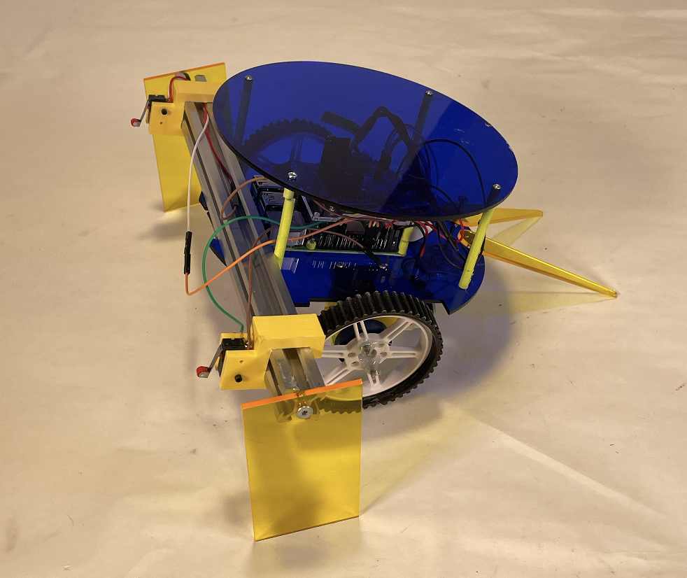

Wifi-Controlled Partner Robot
Part 1: Driving Up A Ramp
This was a project for Tufts' ME30: Electronics and Controls. We were first tasked to design from scratch a robot that can drive up a ramp. For this, we laser-cut the frame out of acrylic, and 3D printed the hardware and motor mounts. We did run into issues of the motor mounts deflecting under the weight of the robot, which would cause the motors to hit the ground at an angle and make it really difficuly to drive straight. However, this issue was solved using a little bit of cardboard wedged between the mount and the frame :). But, just to leave no room for error, we decided to add laser-cut barriers to the side of the robot to make sure it couldn't fall off. While testing, we ran into the issue of the robot slipping, to which we added [ ] to the wheels to provide traction, and increased weight at the center of mass and it went up the ramp beautifully!
Part 2: Communicating Over Wifi
 The second part of this project was to have our robot collaborate with any other partner robot from the class to together push a tube up two parallel ramps. As a former CS major (for only a year), I thought that the coding part of the project would be totally in my wheelhouse. Let it be known that I have never written python code before - let alone python code with wifi capabilities. Needless to say this was a stretch of my former CS capabilities. But for this project, I learned how to implement a client-server model by having my computer host a HTML webpage with the robot's start button. When you press that button, it will send a request to the Raspberry Pi on the robot. The robot then sends a request to the partner robot saying "Hey I want to go at This Speed!" and waits for either a reply of "Yes Lets go That Speed!" or "Actually I want to go This Other Speed" in which case it will just agree and go. Then, while driving, our robot uses buttons placed at the forefront (by the side barriers) to gague whether or not the beam was at an angle, which would mean the robots are going different speeds. In this case, we would speed up or slow down accordingly.
The second part of this project was to have our robot collaborate with any other partner robot from the class to together push a tube up two parallel ramps. As a former CS major (for only a year), I thought that the coding part of the project would be totally in my wheelhouse. Let it be known that I have never written python code before - let alone python code with wifi capabilities. Needless to say this was a stretch of my former CS capabilities. But for this project, I learned how to implement a client-server model by having my computer host a HTML webpage with the robot's start button. When you press that button, it will send a request to the Raspberry Pi on the robot. The robot then sends a request to the partner robot saying "Hey I want to go at This Speed!" and waits for either a reply of "Yes Lets go That Speed!" or "Actually I want to go This Other Speed" in which case it will just agree and go. Then, while driving, our robot uses buttons placed at the forefront (by the side barriers) to gague whether or not the beam was at an angle, which would mean the robots are going different speeds. In this case, we would speed up or slow down accordingly.
Python Script
from flask import Flask, request, redirect, url_for
from gpiozero import PWMOutputDevice, Button
import requests # Import the requests module to send HTTP requests
app = Flask(__name__)
# Define Motor A (L298 Input 1 and 2) using GPIO pins 5 and 6
MOTOR_A_IN1 = PWMOutputDevice(5) # GPIO 5
MOTOR_A_IN2 = PWMOutputDevice(6) # GPIO 6
# Define Motor B (L298 Input 3 and 4) using GPIO pins 23 and 24
MOTOR_B_IN3 = PWMOutputDevice(23) # GPIO 23
MOTOR_B_IN4 = PWMOutputDevice(24) # GPIO 24
# Initialize motor speeds (range: 0.0 to 1.0)
motor_a_speed = 0.5 # Default speed for Motor A
motor_b_speed = 0.5 # Default speed for Motor B
motors_active = False
# Create Button objects for GPIO 27 and GPIO 25
leftButton = Button(27)
rightButton = Button(25)
# Define desired speed
desired_speed = 50 # Default speed value (50%)
current_speed = 0
targetRobotIP = "http://10.243.88.199:5000"
#----------------SENDING SPEED INFO TO OTHER ROBOT----------------
# Function to send the speed-up request when the increase button is pressed
def increase_speed():
global desired_speed
desired_speed += 10 # Increase speed by 10
if desired_speed > 100:
desired_speed = 100 # Cap the speed at 100%
# Send GET request to the other Raspberry Pi
r = requests.get(f'{targetRobotIP}/target/{desired_speed}')
print(f"Increase speed: {r.text}")
# Function to send the speed-down request when the decrease button is pressed
def decrease_speed():
global desired_speed
desired_speed -= 10 # Decrease speed by 10
if desired_speed < 0:
desired_speed = 0 # Ensure the speed doesn't go below 0%
# Send GET request to the other Raspberry Pi
r = requests.get(f'{targetRobotIP}/target/{desired_speed}')
print(f"Decrease speed: {r.text}")
def adjust_speed_based_on_buttons():
"""Continuously monitor button presses and adjust motor speed."""
global current_speed, motors_active
while True:
if BUTTON_SPEED_UP.is_pressed and BUTTON_SLOW_DOWN.is_pressed:
# Both buttons pressed: maintain the designated speed
current_speed = target_speed
motors_active = True
elif BUTTON_SPEED_UP.is_pressed:
# Speed up
current_speed = min(current_speed + BUTTON_ADJUST_STEP, SPEED_MAX)
motors_active = True
elif BUTTON_SLOW_DOWN.is_pressed:
# Slow down
current_speed = max(current_speed - BUTTON_ADJUST_STEP, SPEED_MIN)
motors_active = True
else:
# Neither button pressed: stop motors
motors_active = False
# Update motor speeds
if motors_active:
pwm_value = mm_per_sec_to_pwm(current_speed)
MOTOR_A_IN1.value = pwm_value
MOTOR_A_IN2.value = 0
MOTOR_B_IN3.value = pwm_value
MOTOR_B_IN4.value = 0
else:
# Stop motors
MOTOR_A_IN1.value = 0
MOTOR_A_IN2.value = 0
MOTOR_B_IN3.value = 0
MOTOR_B_IN4.value = 0
time.sleep(0.1) # Check button states every 100 ms
@app.route('/testButtons', methods=['GET'])
def testButton():
print("Left Button is: " + str(leftButton.value))
print("Right Button is: " + str(rightButton.value))
# Attach the functions to the button presses
leftButton.when_pressed = increase_speed
rightButton.when_pressed = decrease_speed
testButton()
#--------------------RECIEVING INPUT----------------------
#So basically this sets your own robot speed to smthn -> use to recieve input
@app.route('/target/', methods=['GET'])
def target(speed):
global motor_a_speed, motor_b_speed, desired_speed
#Check to see if request it recieved/aka same target spd
if desired_speed == speed:
# Set new speed (you can adjust this to your needs)
motor_a_speed = speed/100.0 #Convert speed to a value between 0.0 and 1.0
motor_b_speed = speed / 100.0 # Same for motor B
else:
#update speed and send conformation
desired_speed = speed
requests.get(f'{targetRobot}/target/{desired_speed}')
print(f"Updated speed to: {speed}%")
return 'ok' # Return a response to indicate success
#TODO: be able to recieve input and send ouput simultaneously
#------Run a control loop where the robot is constantly updating/checking button values
#---------theres info on the course website
#-------------can do functions in HTML, but its laggy and relies on wifi, GOOD FOR TESTING!!!
#-------------can use Supervisor to run control loop <- yeah lets do that
@app.route('/cleanup')
def cleanup():
"""Clean up GPIO settings."""
MOTOR_A_IN1.value = 0
MOTOR_A_IN2.value = 0
MOTOR_B_IN3.value = 0
MOTOR_B_IN4.value = 0
return 'GPIO cleanup completed.'
if __name__ == '__main__':
app.run(host='0.0.0.0', port=5000)
# Current Goal: make sure the robot can change speed (speed up or slow down) according to buton press
# Next: Programming startup (DoOnce)
# Next: Link DoOnce to Control Loop